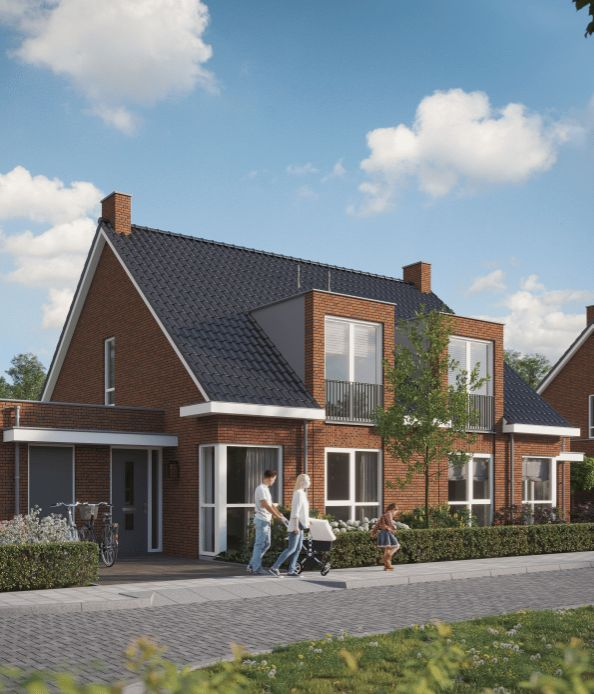
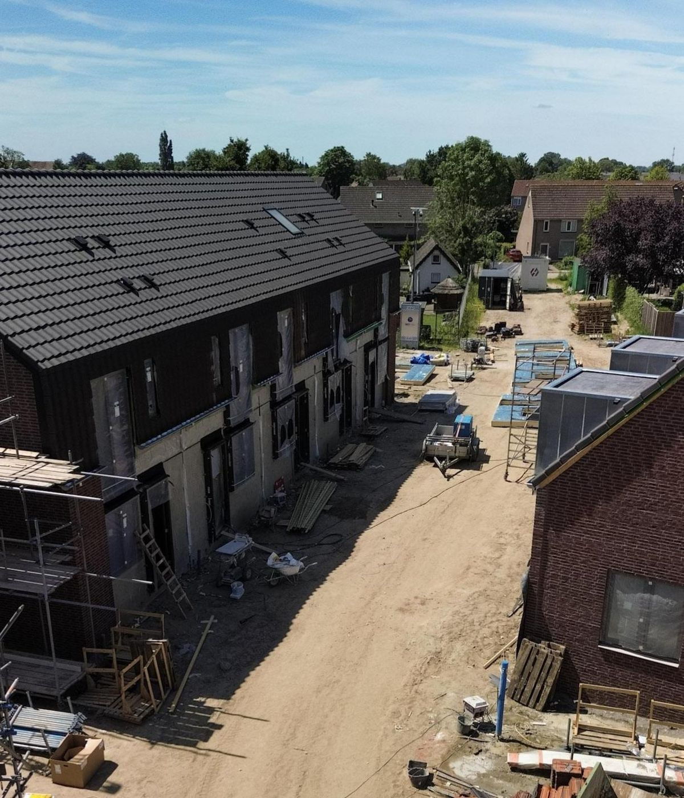

Of u nu thuis een storing heeft of een project voorbereidt, kies uw route.
Een storing aan de verwarmingsketel komt altijd op een verkeerd moment. Wij laten u niet in de kou zitten en helpen u snel en vakkundig.
Complete oplossingen voor zakelijke opdrachtgevers in de regio Breda. Van ontwerp en engineering tot uitvoering en beheer, voor nieuwbouw-, renovatie- en utiliteitsprojecten.
Loop eerst de punten hieronder na. Staat alles goed en werkt de ketel nog steeds niet, bel ons dan en geef de storingscode door.
Staat de thermostaat hoger dan de kamertemperatuur? Staat de ketel aan en is het display zichtbaar? Zit de stekker in het stopcontact en staat de groep in de meterkast aan? Is de waterdruk rond 1,5 tot 2,0 bar? Staan de gaskraan en radiatorkranen open? Staat er een storingscode op het display?
Is de druk lager dan ongeveer 1,5 bar? Vul de installatie dan bij tot circa 1,5 tot 2,0 bar, bij voorkeur als de installatie koud is. Daalt de druk snel opnieuw, meld dit dan bij ons. Er kan sprake zijn van een lekkage of een probleem met bijvoorbeeld het expansievat.
Noteer of fotografeer de code en reset de ketel één keer. Komt dezelfde storing terug, blijf dan niet resetten maar meld de storing bij ons en geef de code door.
Verwarming, warmtepompen en ventilatie voor woningbouw.

